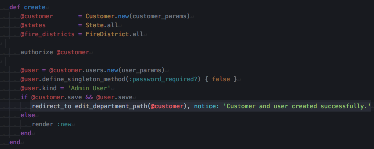
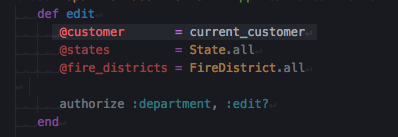
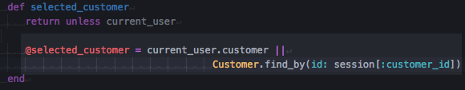

The source of this bug was the following:
After creating a new customer the user is redirected to the department edit view.

But for the form rendered by the departments#edit action to be properly rendered a customer is needed and suck customer is sought after using the controller helper method current_customer

But such method is not functional on this use case, since the newly created customer was not “selected” through his id on the session storage and the current_user it’s not related to it.
